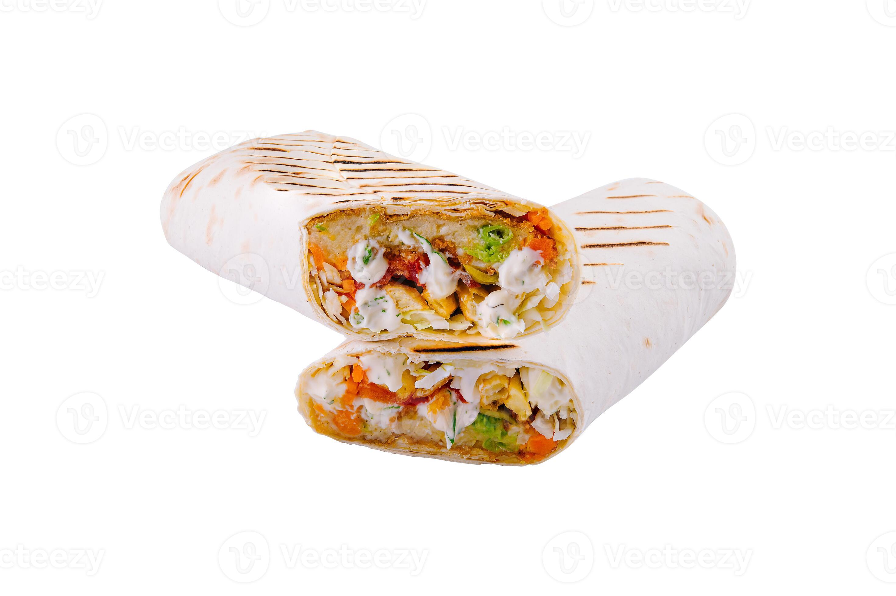

Chicken Shawarma
₱89.00
Chicken shawarma is a popular Middle Eastern
street food featuring marinated, thinly sliced chicken
(ideally thighs) slow-roasted on a vertical spit. It is
seasoned with spices like cumin, paprika, turmeric, and
garlic, then served in pita wraps or over rice
with tahini, garlic sauce, and pickled vegetables.